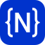
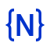
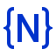

1. Marks
The NCode mark is {N}: N for NCode, inside the curly braces of code. logo/ncode/ holds it as vector
masters and as the PNG and ICO files each place it appears in asks for. build.mjs draws every one of them from
src/logo/ncode.json, in the colors of the blue ramp.
| Tile, blue | Tile, white | Tile, dark | Mark | Lockup |
|---|---|---|---|---|
 |  |  |
Each product has a mark of the same construction, its own letters between the same braces: {id} for NCode Identity.
logo/identity/ holds its kit, drawn by the same code from
src/logo/identity.json: The {id} Kit says where it differs.
The Names
Write NCode, NCode Group, NCode Identity and NCode Buffers: a capital N and C, and a space before a
product's name.
NCode.Identity and NCode.Buffers are package and namespace names; use them only where code or a package is meant.
Which File for What
Every path is under logo/ncode/. The {id} kit's are under logo/identity/. Where a row names a folder's blue
tile, the folder also holds the other variants.
| Use | File | What it is |
|---|---|---|
| NuGet package icon | nuget/ncode-nuget-tile-blue.png | 128 by 128, the size NuGet recommends. Clients scale it down, to as little as 32 pixels, on a white page and in a dark IDE alike, which is why it is a tile |
| Website favicon | Every file in favicon/, with the tags under Favicon | An ICO with its own drawing for each of 16, 20, 24, 32, 40, 48 and 64 pixels, an SVG, the 180-pixel icon iOS takes, and the 192- and 512-pixel icons a web manifest names, one of them maskable |
| GitHub organization or user picture | github/ncode-github-avatar-tile-blue.png | 500 by 500, the size GitHub recommends, with no transparency. For a picture GitHub cuts to a circle, take profile/ |
| GitHub repository social preview | github/ncode-github-social-light.png, -dark.png or -blue.png | 1280 by 640, the size GitHub recommends |
| GitLab group or project avatar | gitlab/ncode-gitlab-avatar-tile-blue.png | 192 by 192, GitLab's ideal size, far below its 200 KiB limit |
| GitLab project avatar, from the repository | gitlab/logo.png, copied to the repository's root | GitLab shows a logo.png at the root as the project's avatar until one is uploaded |
| My Apps and the Microsoft 365 app launcher | myapps/ncode-myapps-tile-blue.png | Exactly 215 by 215, PNG, with a solid background, as Microsoft Entra asks. No transparent variant, for that reason |
| Profile picture cut to a circle | profile/ncode-profile-tile-blue.png | 1024 by 1024, with the mark inside the circle: GitHub and GitLab users, Gravatar, X, LinkedIn |
| Badge logo | badge/shields-logo-white.txt, as under Badges | The mark cropped to its edges, as the value of Shields.io's logo parameter |
| Link preview | social/ncode-og-light.png, -dark.png or -blue.png | 1200 by 630, the Open Graph size |
| Profile banner | social/ncode-banner-light.png, -dark.png or -blue.png | 1500 by 500 |
| Windows application icon | windows/ncode.ico | 16 to 64 pixels as 32-bit bitmaps and 256 as PNG, the layout a Windows application icon has, for <ApplicationIcon> in a project file |
| README, documentation, slides, print | The SVG files in lockup/, mark/ and tile/ | Vector, at any size. Each also comes as PNG |
| A page or a component that draws the mark inline | outlines.json | The mark, the lockup, the brace and each small size's own drawing, as SVG path data |
Variants
| Name | Background | Mark | Use it on |
|---|---|---|---|
tile-blue | NCode Blue | White | Anything: the default wherever the background isn't yours to choose |
tile-white | White | NCode Blue | Anything, where a blue tile is too loud |
tile-dark | NCode Navy | NCode Blue Light | Anything; made for dark pages |
mark-blue | Transparent | NCode Blue | Light backgrounds only: on a dark page its contrast is 2 to 1 |
mark-light | Transparent | NCode Blue Light | Dark backgrounds only |
mark-white, mark-black | Transparent | White, black | One color: over a photograph or a color, in print, as a mask |
mark-auto, lockup-auto (SVG only) | Transparent | NCode Blue, or NCode Blue Light in a dark color scheme | A page that follows the reader's system setting |
A tile's file has rounded corners with transparent pixels outside them where the picture is shown as it is (NuGet,
favicons, tile/), and fills the whole square where the platform cuts its own shape (github/, gitlab/, myapps/,
profile/, apple-touch-icon.png, the maskable icon, and the -square files in tile/).
The mark sits at one of three sizes in its square: across seven eighths of it where the picture is shown small (NuGet,
favicons, badges), a little smaller on tiles and avatars, and inside the center circle of 80% of the width where a
circle is cut from it (profile/, the maskable icon).
Colors
The three colors are the anchors of the blue ramp, blue.600, blue.300 and blue.900 in
src/tokens.source.json, so the marks and the tokens cannot disagree.
| Name | Hex | Use |
|---|---|---|
| NCode Blue | #0033CC | The mark on light backgrounds; the tile. The blue the mark has always had |
| NCode Blue Light | #809FFF | The mark on dark backgrounds |
| NCode Navy | #0A1F5C | The dark tile and the dark cards |
| White | #FFFFFF | The mark on NCode Blue |
Contrast, as WCAG measures it: NCode Blue on white, and white on NCode Blue, 9.0 to 1; NCode Blue Light on GitHub's
dark page (#0D1117) 7.5 to 1, on Visual Studio's dark theme (#1E1E1E) 6.6 to 1 and on NCode Navy 6.1 to 1. NCode
Blue on a dark page is 2.1 to 1, too low to read: use the light mark or a tile there. Under a tenant's colors NCode's
marks go one color, the text color, and never take the tenant's hue
(Products and tenants).
The Drawing
- The master is drawn on a grid of 64 units from straight lines and circular arcs. The braces are a stroke of 4 units, 48 high; the N is 24 wide and 32 high, with stems of 5. Every stem lies on a whole unit, so the mark is sharp at 64 pixels and at its multiples.
- At 16, 20, 24, 32, 40 and 48 pixels the mark has a drawing of its own, with each stem on whole pixels. A scaled-down
master puts them between pixels, which is what makes a small icon look soft. The ICO files and
favicon.svguse these drawings. - The wordmark is "NCode" in Inter Display Medium, version 4.000, converted to outlines, with capitals as tall and stems about as heavy as the mark's N. src/logo/ncode.json names the exact font file.
- Leave clear space around the mark of at least the width of one brace, 12 of its 64 units. The files in
mark/already hold 4 units of it at the sides and 8 above and below. - The smallest drawing is 16 pixels, 14 across its ink, which is also the size a badge shows the cropped mark at. Below that the braces do not read. Keep the lockup at least 24 pixels high.
- Don't stretch the mark, recolor it outside the palette, outline it, or set the braces in a font: a font's braces and the mark's differ.
Favicon
Copy favicon/ to the site's root, change name and short_name in site.webmanifest, and add:
<link rel="icon" href="/favicon.ico" sizes="32x32">
<link rel="icon" href="/favicon.svg" type="image/svg+xml">
<link rel="apple-touch-icon" href="/apple-touch-icon.png">
<link rel="manifest" href="/site.webmanifest">favicon/transparent/ is the mark without a tile: blue in favicon.ico, light blue in favicon-dark.ico, and either
in favicon.svg, by the reader's color scheme.
<link rel="icon" href="/favicon.ico" sizes="32x32" media="(prefers-color-scheme: light)">
<link rel="icon" href="/favicon-dark.ico" sizes="32x32" media="(prefers-color-scheme: dark)">
<link rel="icon" href="/favicon.svg" type="image/svg+xml">Badges
Shields.io takes a logo of its own as a data URI in the logo parameter and can't recolor it, so the mark comes in
three colors: white for a badge's default gray label, blue and light blue for a label color of your own. Each
badge/shields-logo-<color>.txt holds one line, ready to follow logo=:
In a README
Name a file by its address at a release's tag, so a README keeps the logo it was written with. GitHub shows the image
that matches the reader's theme when a <picture> names both:
<picture>
<source media="(prefers-color-scheme: dark)" srcset="https://raw.githubusercontent.com/NCodeGroup/brand/v0.1.0/logo/ncode/lockup/ncode-lockup-light.svg">
<img src="https://raw.githubusercontent.com/NCodeGroup/brand/v0.1.0/logo/ncode/lockup/ncode-lockup-blue.svg" alt="NCode" height="48">
</picture>nuget.org renders CommonMark only, so a package's README takes one image in Markdown: the blue lockup at the same address.
The {id} Kit
logo/identity/ holds every file of the {N} kit, in the same folders, named ncode-identity- where the {N} kit
has ncode-, such as nuget/ncode-identity-nuget-tile-blue.png and windows/ncode-identity.ico; its
site.webmanifest names it "NCode Identity", "Identity" for short.
| Tile, blue | Tile, white | Tile, dark | Mark | Lockup | Lockup, stacked |
|---|---|---|---|---|---|
- A stacked lockup:
lockup/ncode-identity-lockup-stacked-<color>.svg, and as PNG 384 and 1536 high. It sets the mark at twice its size above the wordmark, for a space nearer a square. Keep it at least 72 pixels high. - The descriptor: the link previews,
social/ncode-identity-og-*.png, andgithub/ncode-identity-github-social-*.pngcarry "OpenID Connect and OAuth 2.x for .NET" under the lockup, in Inter Display Regular. The banners carry the lockup alone. - The drawing: the braces are point for point the
{N}mark's. The letters have a stroke of 4: the d is 16 wide and 32 high, with a ring 16 across as its bowl, and the i is as high as the bowl, under a dot 5 across. Up to 24 pixels the bowl is three bars around a hole, and up to 32 the dot is a square. Below 16 pixels the letters can't be told apart. - The wordmark: "NCode Identity", two words, in Inter Display Medium from Inter 4.1, with capitals as tall as the d. src/logo/identity.json names the font files.
Name its files by their address at a release's tag, as In a README says, with logo/identity/ for
logo/ncode/.
License
The marks are not under this repository's Apache License 2.0: they are trademarks of NCode Group, and their files are copyright NCode Group, all rights reserved. TRADEMARKS.md says how you may use them.